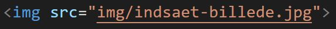

HTML tags
HTML kode består af tags - i næsten alle tilfælde et start tag og et slut-tag.
Start-tag og slut-tag er altid ens, bortset fra at slut-tags indeholder en skråstreg, som fortæller, at her slutter det område, som du startede med dit start-tag.
Teksten her er f.eks. placeret mellem et p-starttag og et p-sluttag. P står for paragraph og angiver, at dette er et tekstafsnit.
Nogle få tags har ikke et sluttag - f.eks. img-tagget, som man bruger til at indsætte billeder:

De semantiske tags
Semantik betyder læren om ords betydning.
I HTML er semantiske tags, tags som har en bestemt betydning. Man kan ud fra tagget se, hvad indholdet imellem de to tags skal bruges til.
Søgemaskiner bruger semantiske tags til at vurdere, hvilket indhold på siden, der er vigtigt, når de skal finde gode resultater til de ord, som folk søger på.
Det er vigtigt at øve sig på de semantiske tags allerede fra begyndelsen - også selvom der ikke er så meget indhold på siden.
En side er næsten altid opbygget af tre overordnede semantiske tags: header, main og footer.
Header og footer går igen på alle sider og main indeholder de elementer, som er unikke på hver side.
Se eksempel på header og footer på Vojens Skøjteklubs hjemmeside.
Main indeholder derudover section og article. En section kan indeholde flere articles og main kan indeholde flere sections.
Se eksempel på sections og articles på Danfoss' hjemmeside.